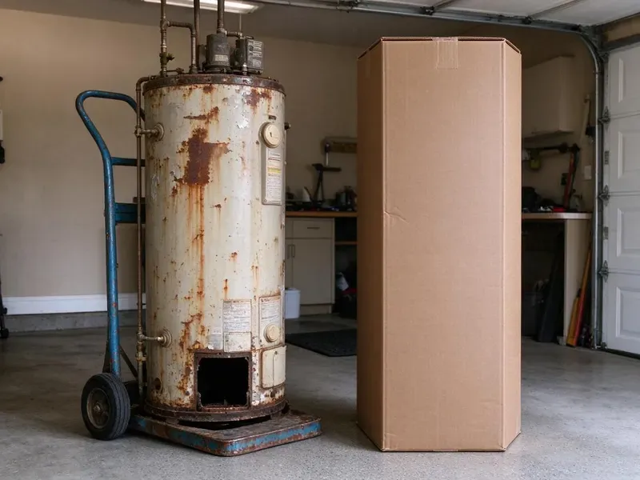
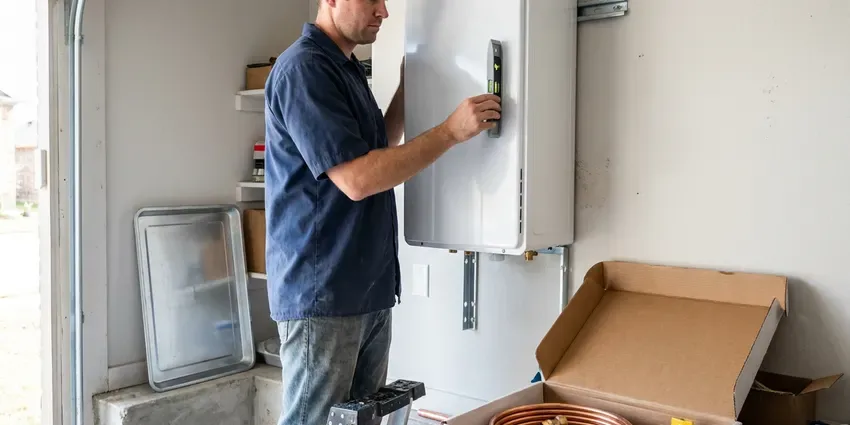

Plumbing Replacement in Duluth, MN
Tank dripping at the base? CNV Plumbing replaces water heaters in Duluth, MN with same-day swaps on most standard tanks.
- Itemized Pricing
- Repair Option Quoted
- Nearby Crews
- Labor Warranty
Repair or Replace? Get Both Prices in Duluth, MN
A tech looks at age, condition and past repairs before giving a number.
Replacing Worn-Out Plumbing in Duluth, MN
CNV Plumbing handles full-service replacements across Duluth, MN, from water heaters and softeners to sewer and water lines. Our licensed plumbers install the new equipment to current code, which often means adding things the old install never had, like an expansion tank, a drain pan or a gas sediment trap. Old installs often fall short.
Work we handle every week:
- Gas, electric and tankless water heater replacement
- Softener replacement
- Trenchless and open-cut sewer replacement

Additional Plumbing Replacement Services in Duluth, MN
When repairs are no longer enough, our replacement services in Duluth, MN deliver modern, efficient equipment installed right.


Tankless Water Heater Replacement in Duluth


Customers
Why Choose CNV Plumbing for Plumbing Replacement in Duluth, MN?
Quotes from CNV Plumbing list every part of the job: equipment, labor, code upgrades, permit and haul-away of the old unit. You can compare it line by line. If another company leaves out the expansion tank or the permit, you will see the gap right away instead of hearing about it after the inspector fails the job.
- Quality Equipment, Name-brand heaters, pumps and pipe backed by their makers.
- Licensed Plumbers, Every plumber licensed and insured on every job.
- Code Upgrades, Expansion tanks, pans and venting brought up to current code.
Citywide Coverage
Our crews cover Duluth end to end and the towns around it. Older areas usually have galvanized supply pipe and clay or cast iron sewers, and homes from the late seventies through the nineties hold most of the poly. We check for both.
Experienced Team
Our plumbers replace water heaters, pumps, softeners and pipe every week and know what holds up to Minnesota conditions. They plan around layout, access and existing connections, so new equipment fits the space and future service is simple, not a fight with tight clearances. Future repairs stay easy.
Safety-First Approach
Every replacement is checked before we pack up. Heaters run a full cycle with a relief valve check, pumps cycle several times, pipe gets pressure tested, and we show you every new shutoff. Learn where the valves are.
Trusted Certified Duluth Plumbing Services Professionals
At CNV Plumbing, we take pride in licensed, certified plumbing services throughout Duluth, MN. Those papers on the wall mean something. Our plumbers hold recognized industry credentials, and they follow strict safety and quality rules on every repair, installation and maintenance call we run.
Call Us Now PHCC Plumbing Contractor Recognition
PHCC Plumbing Contractor Recognition Better Business Bureau (BBB) Accreditation
Better Business Bureau (BBB) Accreditation Angi Certified Pro
Angi Certified Pro ISO 9001 Quality Management Certification
ISO 9001 Quality Management CertificationReplacement Jobs We Handle in Duluth, MN
Well Pressure Tank Replacement in Duluth
A well pump that clicks on and off every few seconds usually points to a failed pressure tank. A ruptured bladder lets the tank waterlog, the air cushion disappears, and the pump starts with every tap, wearing the motor out years early. A new tank fixes it. The pressure switch gets checked too.

Whole-Home Pipe Replacement in Duluth
Several pinhole leaks, old galvanized or gray poly in a Duluth home usually mean it is better off with a complete repipe. New PEX or copper often runs through the attic and down interior walls, letting us abandon leaking under-slab pipe instead of breaking concrete. The slab stays intact.
Pipe Replacement & Whole-Home Repiping in Duluth, MN
Homes in Duluth, MN with galvanized steel or polybutylene tend to show the same symptoms: low pressure, rusty water and leaks that keep coming back. A whole-home repipe replaces every supply line from the main shutoff to each fixture with PEX or copper, and in most homes it takes two to four days with water back on each evening whenever possible. Walls get patched after.
Repair vs Replacement Cost Comparison in Duluth, MN
A common rule of thumb is to replace when a repair costs more than half the price of new, or when the part is near the end of its life. Take a 12-year-old heater with a bad gas valve, where the valve alone costs a third of a new unit and the tank is already near the end. You get both numbers.
Sewer Line Replacement in Duluth
Sewer lines in Duluth fail from roots, cracks, collapses and bellies where the pipe sank and now holds waste. Freeze and thaw movement can shift older sewer laterals, and tree roots often find their way into the joints. We run a camera first. That footage shows exactly where the line failed and how much of it is bad, so you know whether a spot repair, a trenchless liner or a full replacement makes the most sense for your yard.
Gas Line Replacement in Duluth
Old black iron or corroded gas lines in Duluth homes can leak at threaded joints, and a gas leak is not something to wait on. If you smell gas, leave the house, then call the gas utility from outside, and once the line is safe, we replace the damaged section or the whole run, pressure test it and relight every appliance. Testing comes before relight.
Well Pump & Pressure Tank Replacement in Duluth
Rural homes around Duluth that run on a well have no water at all when the pump quits. The old pump comes up, wire and drop pipe get checked, and the new pump goes in at the right depth, often with a new tank and switch too. Water is usually back that day.

Pipe Replacement and Repiping in Duluth
Corroded, leaking or galvanized pipe in Duluth can stain water and cause costly damage. We replace failing sections or repipe the whole house with PEX or copper, plan routes that keep wall openings small and finish every job with a pressure test held long enough to show even a slow drip at a fitting. Patching is included.
Replacement Plumbers Near You in Duluth, MN
Searching plumbing replacement near me in Duluth usually means something just failed or is about to. CNV Plumbing is local, so a plumber with the part can often reach you that day, and the same person who diagnoses it installs it. No hand-offs. One plumber, start to finish.
Being close by means short drives when equipment fails. A leaking heater in the garage, a well pump that died overnight or a sump pump that quit in a storm can often be handled the same day, many before dinner. Trucks carry standard tanks and pumps.
CNV Plumbing at a Glance
- Licensed and insured plumbers serving Duluth, MN
- 24/7 emergency service with same-day scheduling
- Clear written estimates, no hidden fees
- 4.8-star rated by 501+ Minnesota customers
Duluth Map
Duluth Information
- Population
- 87,680
- Area codes
- 218/447/715
- Service area
- Duluth and towns within a 40 mile drive
- Nearby
- Blaine, Coon Rapids, Brooklyn Park, St. Cloud
Buried pipe moves when the ground does, and cold snaps stress water lines, so a Duluth, MN home eventually needs some of its plumbing replaced.
Talk to a Plumber
Call CNV Plumbing for reliable plumbing work done by licensed pros in Duluth, MN.
Our Specialized Plumbing Services in Duluth, MN
At CNV Plumbing, you get every kind of plumbing service from one company across Duluth, MN. From leak detection to full system installs, our team works fast and charges fair prices on homes and commercial properties alike. Take a look at our core services below:


How We Handle a Plumbing Replacement in Duluth, MN
The repair-or-replace call gets made before we order anything.
Request a Quote
Call (612) 712-9569 or fill out our form to set up a visit. Expect a couple of quick questions.
On-Site Evaluation
In your Duluth home, we inspect the failing part and check the connections. We also note any code upgrades.
Install
Out with the old, in with the new, to current code. Every connection gets tested.
Frequently Asked Questions About Plumbing Replacement in Duluth
Prices vary with the type of work. Heaters might run $1,400 to $3,500, repipes $4,000 to $15,000, and well pumps or tanks $1,200 to $3,500, with code updates, access and permits moving each up or down. Every price is in writing.
Scale, sediment, heat and ground movement wear on every system. Scale buildup shortens water heater life and clogs showerheads, which is why water softeners are so common in the state. Maintenance slows it, but replacing eventually makes more sense.
For many jobs, yes. Water heaters, sewer lines, gas lines and whole-home repipes usually need a permit and an inspection, and the inspector has to see the work before walls or trenches are closed. We handle both.
Permits are often needed for water heater, water line and sewer line replacements. We take care of permits and inspections.
Leaks that keep coming back, rusty water, low pressure, recurring backups and equipment over 10 years old. An inspection shows what needs replacing.
Bradford White, Rheem and AO Smith heaters, Rinnai and Navien tankless, and proven softeners and well pumps. The job decides the brand.
Anywhere from a few hours to several days. A water heater replacement usually takes two to four hours, a main water line often takes a day, and a whole-home repipe or a long sewer replacement can take two to five days depending on the size and access. We tell you up front.
Repeat leaks in the same area, rust-tinted water, low pressure across the house and heavy corrosion on exposed pipe. Equipment past its normal life, such as a heater over 10 or a softener over 15, is usually worth replacing over repairing again. Check the label date.
What People Are Saying About Our Plumbing Experts?

Kevin O.
Before buying our house I paid for a sewer camera inspection. CNV Plumbing found a belly in the line that held standing water about forty feet from the cleanout. We used the video to get the sellers to fix it before closing.
Sewer Camera Inspection · Blaine, MN
Nathan E.
Our tankless heater kept throwing an error code and shutting off mid shower. The tech flushed the heat exchanger, which was full of scale, and replaced a bad flow sensor. Hot water has been steady for half a year now.
Water Heater Repair · Maple Grove, MNCarlos V.
Our house still had galvanized pipe, and upstairs the shower was a trickle. The crew repiped everything in PEX over three days and patched every drywall hole before they left. The pressure difference is night and day.
Repiping · Brooklyn Park, MN
Brian W.
I smelled gas behind the dryer and called right away. The plumber found a corroded flex connector, replaced it, and pressure tested the whole line before turning the gas back on. He let me watch the gauge hold steady for fifteen minutes.
Gas Line Repair · Brooklyn Park, MN
Megan L.
Our upstairs tub drained so slowly that every shower turned into a bath. CNV Plumbing pulled a wad of hair out of the stopper and then snaked the line past the trap. Three months later it still drains fast.
Drain Cleaning · St. Paul, MNRachel N.
Hard water was leaving white crust on every faucet and our dishwasher was struggling. The tech tested the water, recommended a softener sized for a family of five, and installed it with a bypass valve in one afternoon. The spots on our glasses are gone.
Water Softener · Blaine, MN